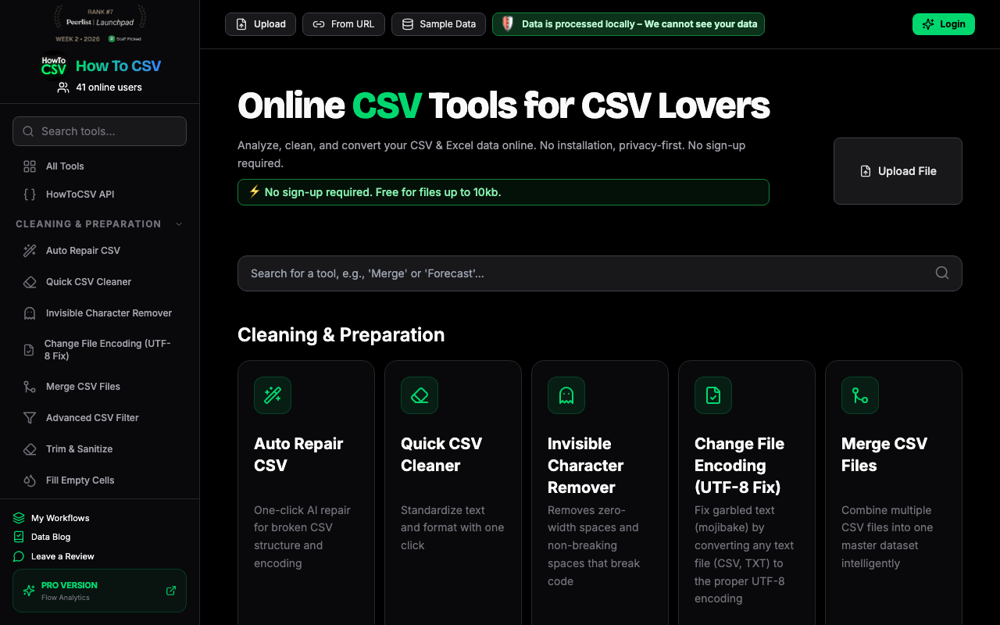
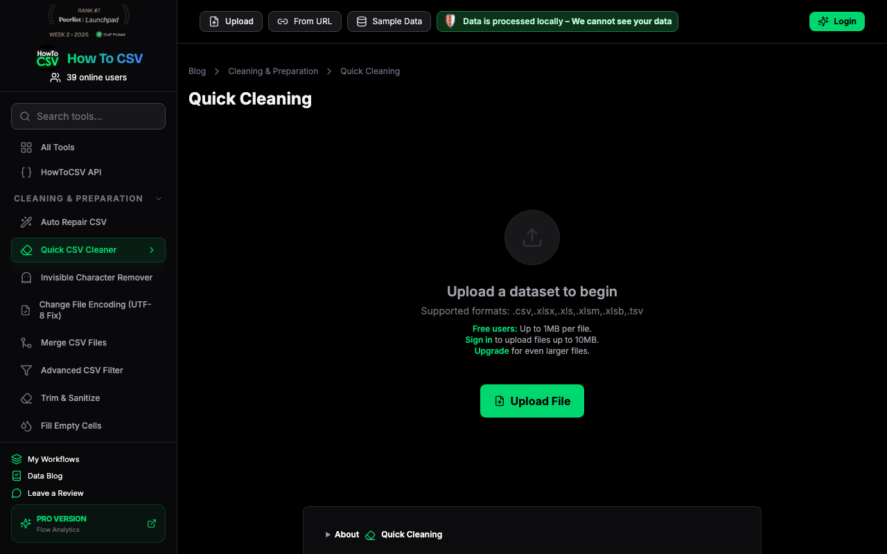
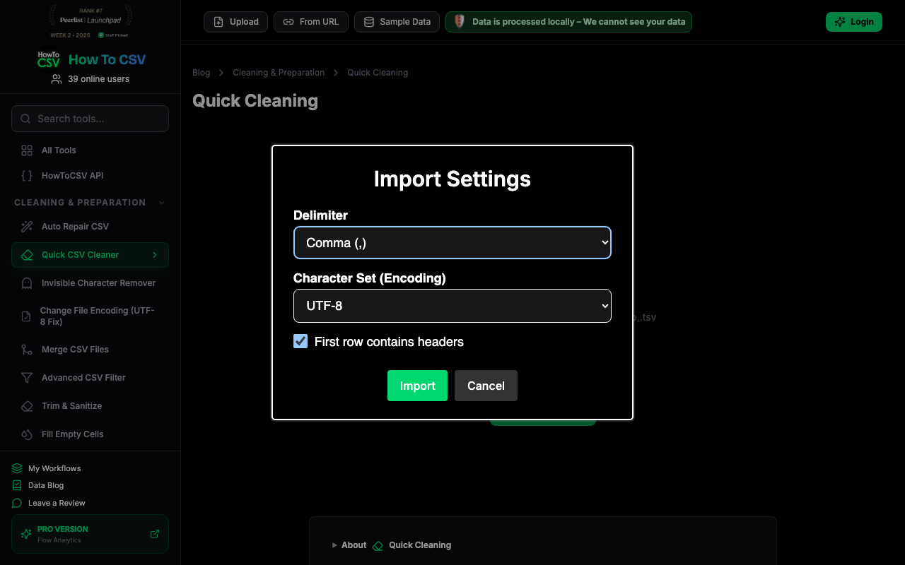
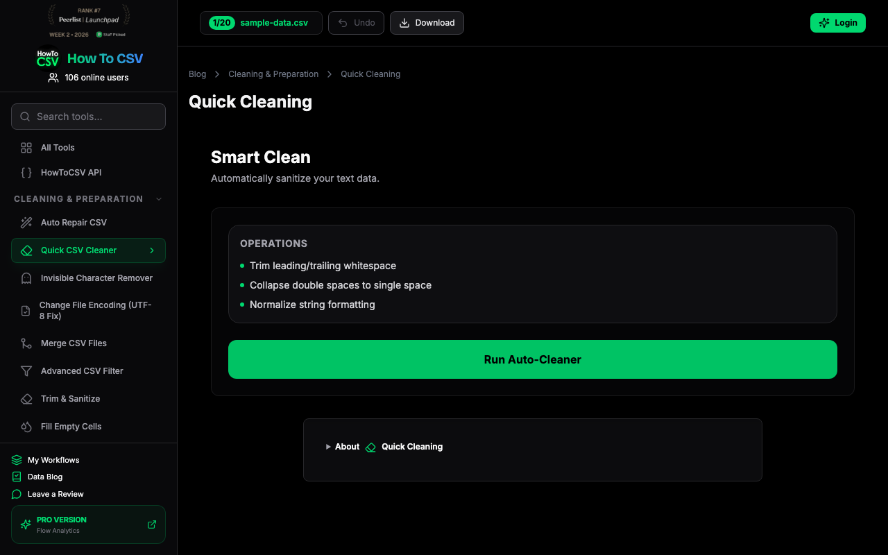
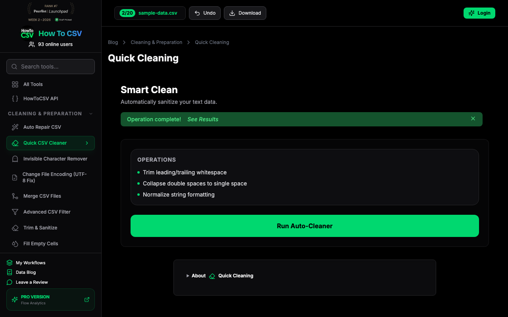
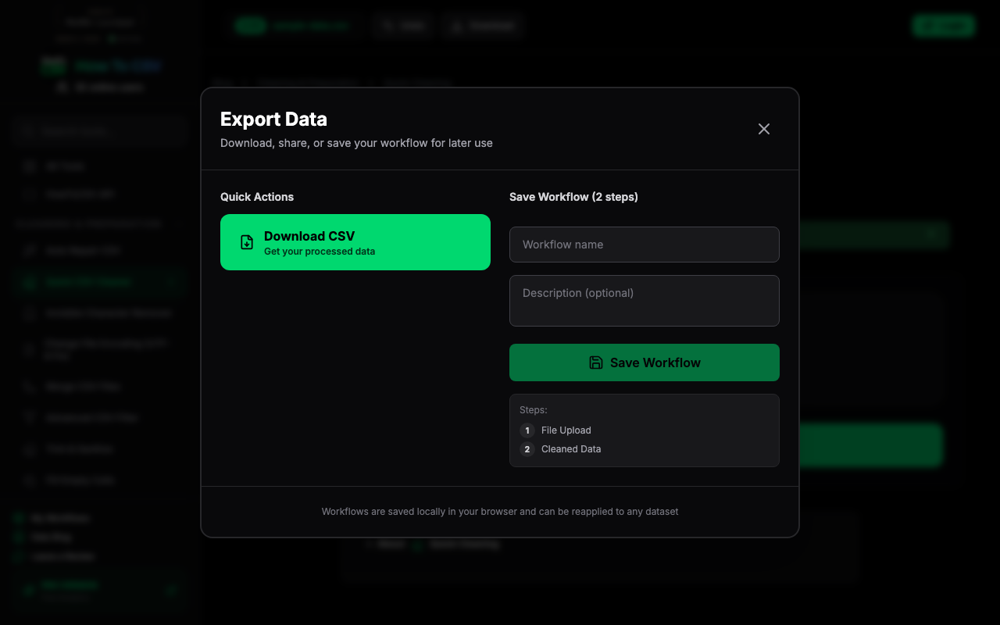

I have these messy supplier files and need to clean them up quickly. 'Quick CSV Cleaner' sounds like exactly what I need for my shop's parts list. Let's see if this is as easy as it looks.

I'm on the Quick Cleaning page, and it looks pretty straightforward. I'll use the Sample Data button since I don't want to risk my own supplier files just yet. It's nice that they say the data stays local, that makes me feel a bit safer about the whole thing.

These settings look like what I see in Excel. Comma and UTF-8 seem safe enough for a start. I'll just hit Import and see how it handles the sample data.

The data is in. Now I just need to see if this 'Auto-Cleaner' actually does what it says. Trimming spaces and fixing formatting is exactly what I need for those messy supplier files. Let's give it a go and see if it makes the data look better.
It says complete. But did it actually fix the messy spacing in the supplier file? Let me see the data before I trust the download.

The columns look clean, no weird spacing like my supplier files usually have. I'll close this preview and see if the download is straightforward.

The cleaning is done and the preview looked fine. Let's see if it actually lets me download the fixed file without making me sign up.

This is exactly what I need. I ran the cleaner, it fixed the sample data, and now I can just download the CSV without making an account. Decision: adopt. This will save me hours on supplier files.